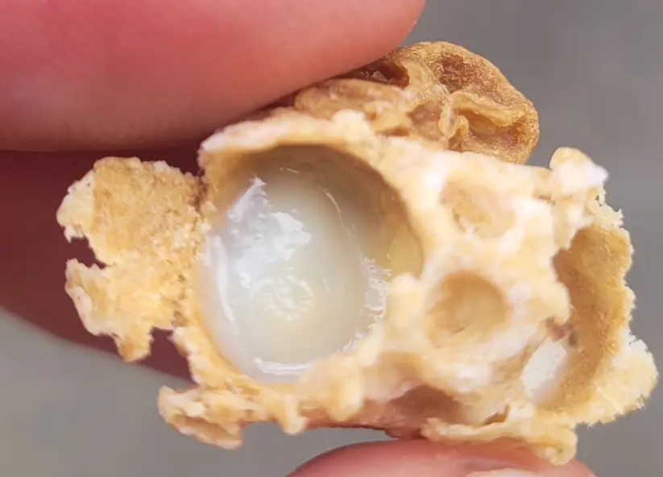
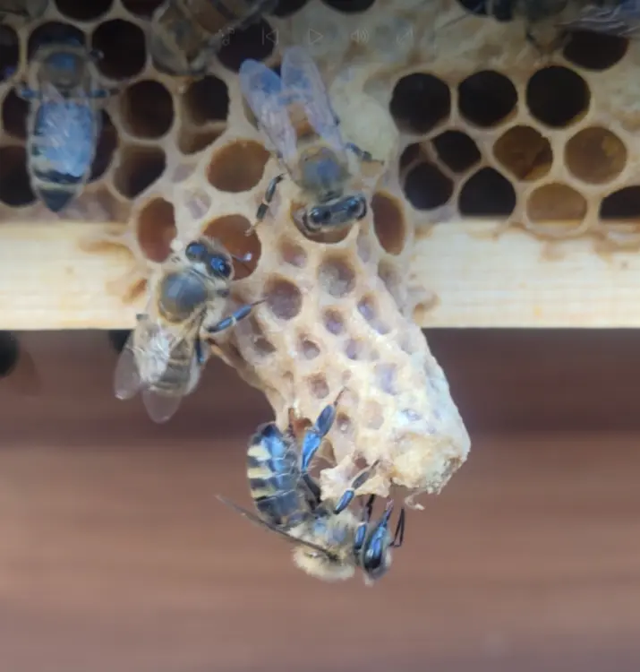

Jump to
Short “field answers” first, deeper detail after.
Quick ID
Decision rules
Quick ID: cup vs charged vs capped
Field answerField answer
Empty cup = no action. Charged cell (larva + royal jelly) = colony is preparing a queen.
Capped cell = you’re late in the process; record the stage and act deliberately.
Cup (play cup)
Often normal
- Looks like a small acorn-cup.
- Usually empty and dry.
- May appear and disappear between inspections.
Charged queen cell
Pay attention
- Larva present with milky royal jelly.
- Cell is being extended (longer, peanut texture).
- Interpret using context: swarm/supersedure/emergency.
Capped queen cell
On a clock
- Capping is usually domed.
- Swarm risk may increase (especially in spring).
- Do not crush cells “just because” — decide based on your plan.
Example queen cell photos (your hive)
These are your own images, used as stage references on this page.



Where to look on the frame
Field answerField answer
Start with the brood frames. Check lower edges first, then scan the face of comb,
then look in “pockets” and between frames.
Lower edges
Classic swarm zone
Most swarm cells are often built along the bottom bars/edges of brood frames.
Face of comb
Supersedure often here
Supersedure cells are often fewer in number and can appear on the face/middle area.
Pockets & gaps
Easy to miss
Look in “comb pockets”, brace comb areas, and between frames — especially if bees are dense.
Deeper detail
Don’t over-handle frames while hunting for cells. Work methodically:
edge → face → rotate slightly → edge again. If you find one charged cell, assume there may be more.
Swarm vs supersedure vs emergency
Field answerField answer
Use the “3 clues”: number, location, colony story.
Lots of cells on lower edges in a booming colony often suggests swarm preparation.
One or two cells on the face of comb with an underperforming queen often suggests supersedure.
Swarm cells
Common in spring
- Often multiple cells.
- Frequently along lower edges.
- Colony is strong, congested, or backfilling brood nest.
Supersedure cells
Quiet replacement
- Often 1–2 cells.
- May be on the face/middle of frame.
- Queen may be failing / patchy brood / reduced performance.
Emergency cells
No queen story
- Can be many, scattered.
- Built from worker cells around young larvae.
- Often follows queen loss and is usually raised from very young larvae after eggs are no longer available.
Caution
Misreading the situation is worse than “not doing something fast”.
If you’re unsure: take photos, record what you saw (stage + location + number), and seek local guidance.
Timeline cheat sheet
Field answerField answer
If you see a capped queen cell, assume the process is already well underway.
Record the stage, assess the colony story, and plan your next check or action quickly.
Day 0–3
Egg stage
- A queen egg is laid either in a prepared cup or in a worker cell that may later be remodelled by the bees.
- At this stage, what you may see is often just a cup or a very early started cell.
- Very easy to miss unless conditions and visibility are good.
Day 4–8
Charged cell
- The larva is fed royal jelly and the cell is extended.
- This is the classic charged queen cell stage.
- If you find cells at this stage in a strong spring colony, you need to think carefully about swarm preparation.
Around Day 8
Capped
- The queen cell is sealed.
- This usually means you are on a tighter clock.
- In swarm season, capped swarm cells can mean the colony is very close to swarming, and in some cases it may already have done so.
Around Day 16
Virgin emerges
- A virgin queen typically emerges around day 16 from the original egg being laid.
- By this point, any follow-up plan needs to have already been made.
- This is why timing after finding charged or capped cells matters so much.
Following days
Mating window
- The virgin queen then needs time to harden, fly, mate and begin laying.
- Weather can delay this stage significantly.
- A colony may therefore appear queenless for a while even though the process is still underway.
What this means in practice
Field use
- Cup only = monitor and record.
- Charged = colony is actively preparing a queen.
- Capped = act with purpose; don’t assume you still have plenty of time.
Important note
The timeline tells you how far the queen cell has developed, but it does not by itself tell you
why the colony made it. Always combine timing with cell number, location, queen evidence and colony condition.
What to do next
Field answerField answer
Don’t panic-cut cells. First: confirm queen evidence (eggs/young larvae), assess congestion,
and record stage + location + number. Then choose a plan that matches your goals.
This page is designed to help you identify the situation clearly. For full action steps, use a swarm-control method you already understand or seek local guidance if you are unsure.
If it looks like swarm prep
Spring priority
- Reduce congestion: space management matters.
- Work to a known swarm-control method you’re confident with.
- Set a clear follow-up visit goal (and date).
If it looks like supersedure
Often “let it happen”
- Fewer cells; colony replacing a failing queen.
- Record brood pattern + queen status evidence.
- Avoid unnecessary disruption.
If it looks like emergency
Act carefully
- Confirm if there are eggs/young larvae present.
- Consider whether the colony needs support (advice/mentor).
- Keep notes and avoid repeated heavy inspections.
FAQ
Quick answersDo I need to find the queen if I see queen cells?
Not always. Evidence of a laying queen (eggs/young larvae) plus context is usually more useful than a long queen hunt.
Are queen cups always swarm signs?
No. Empty cups can be normal. Charged cells (larva + royal jelly) are the key change.
Should I cut out queen cells?
Avoid “automatic” cutting. First record stage + number + location and choose an action based on a clear plan.
Where are swarm cells usually found?
Commonly along the lower edges of brood frames — but always check the whole brood area methodically.
What should I write in my notes?
“Queen evidence (eggs/larvae), number of cells, stage (cup/charged/capped), location (edge/face), colony congestion, actions taken + follow-up goal.”